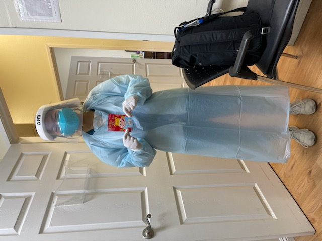
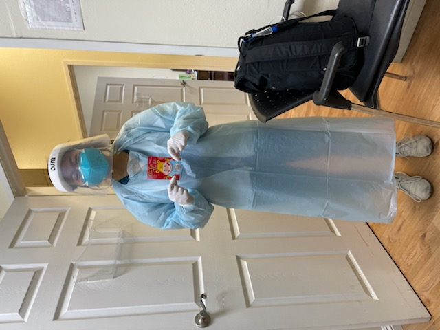
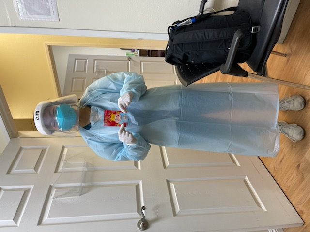

Duyen Tran
I am a 4th year undergraduate student at UCR persuing to be a Physician Assistant
I am currently working as a medical scribe and on a team that research common diseases around the community and educating patients on preventive care and medications.
As an Physician Assistant, one of my goals is to help the underserved Vietnamese Community that cannot get access to health care because of the language barrier. Patients ranging from pediatrics to geriatrics, I want to be the bridge that connects them to greater health.
Experience
Medical Scribe
• Shadow leading physician, Chinh Mai M.D of Internal Medicine and help record HPI
• Record patient clinical history, lab results, medical orders, and procedures done by other health professionals into medical record system
• Follow up on patients after visits to check on their health improvements
COPE Health Scholar
• Assisted nurses and doctors with daily rounds of patient services ranging from bathing to feeding to mobility
• Authorized incoming Health Scholars who are new to the department
Volleyball Coach
• Recruited and mentored a group of 12 students to learn the overall values of volleyball
• Brainstormed and implemented various team drills to target specific areas of skills
• Centralized an environment around team work and communication
Education
UC Riverside
Portfolio
 (1).jpg)
 (1).jpg)
 (1).jpg) 

